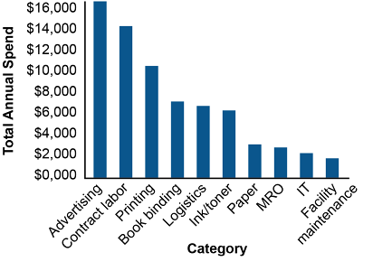

A spend analysis is a retroactive review of all purchases during a period, used to identify opportunities for cost savings through supply base optimization.
Steps:

Supply base right-sizing (rationalization) = reviewing suppliers in a category to determine the ideal number. Reducing supplier count in a category can:
Approaches:
Right-sizing works well alongside outsourcing/offshoring initiatives. It is a continuous endeavor — new categories emerge, supplier performance changes, and market conditions shift.
Key principle: the reduction in supplier count should not be arbitrary — it should be based on an assessment of the ideal number for the category, balancing cost, quality, risk, and flexibility.
Click card to flip · Use arrows or shuffle to practise